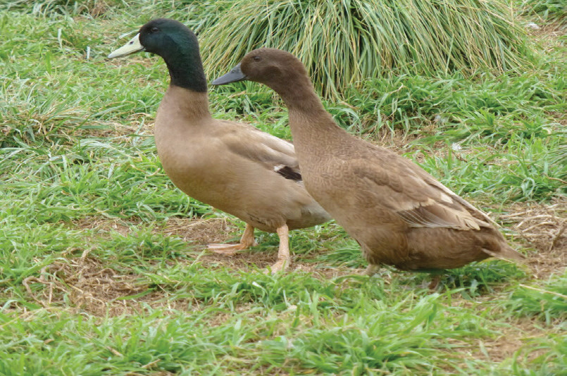
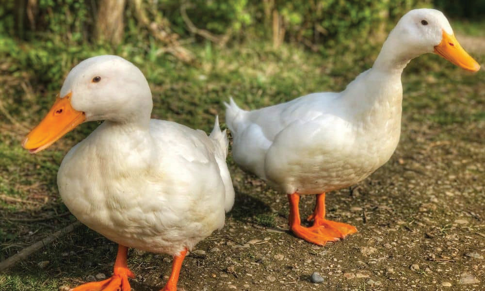

(c) Khaki Campbell
These ducks are known for their high egg production. They are a lightweight breed that can adapt well to various climates. They are also excellent foragers. Figure 14.2 (c) shows Khaki Campbell ducks

Figure 14.2 (c): Khaki Campbell duck
(d) White Pekin
These ducks are popular for meat production. They love spending time outdoors. They are moderate foragers. Figure 14.2 (d) shows White Pekin ducks.

Figure 14.2 (d): White Pekin duck
It is important to note that while these duck breeds are suitable for tropical conditions, proper care and management are still necessary to ensure their health and well-being. Providing proper housing, clean water, and proper feeding and mating or breeding are essential for raising ducks.
Activity 14.1
1. Use the internet or a library to find out about:
(a) different breeds of ducks that are commonly produced in Tanzania.
Look for the breed(s) that fit your needs.
(b) proper practices for housing, feeding, mating, incubation, parasite and disease management, handling, value addition and marketing of duck products.
2. Visit duck farmers and ask or observe the following:
(a) what duck breeds they keep and why they chose them.
(b) different types of duck housing they use and their major features.